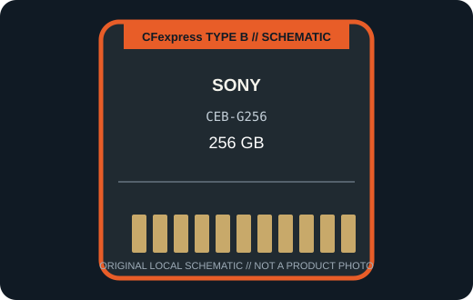

[ REMOVABLE MEDIA // PRODUCT RECORD ]
Sony CEB-G256 CFexpress Type B 256 GB
A 256 GB member of Sony’s CEB-G G Series: a CFexpress Type B card for supported imaging hosts, not a reader or drive. This entry describes the removable card only; the camera or reader is separate.

MEDIA ONLY: Sony CEB-G256 CFexpress Type B 256 GB. Capacity, interface generation, and compatibility refer to this model and not other cards in the same family.
Capacity, interface and compatibility
| Manufacturer model | CEB-G256; CFexpress Type B, G Series |
|---|---|
| Nominal capacity | 256 GB. Usable space varies with formatting and system-reserved capacity. |
| Interface | PCI Express Gen 3 x2; CFexpress Type B form factor. |
| Performance | Sony lists the 256 GB CEB-G256 variant separately from the larger-capacity G Series cards; its speed and performance guarantee should be checked against the exact host workflow rather than inferred from another capacity. |
| Host compatibility | A camera or reader explicitly supporting CFexpress Type B and this card capacity. Some XQD-shaped slots accept CFexpress only after model-specific firmware support; physical fit alone is not compatibility. |
| Write protection | No physical card-level write-protect switch is specified for this model; use host controls and verified backups. |
| Model-specific note | Sony’s product and support pages distinguish the CEB-G256 256 GB card from larger G-series variants; confirm that exact model and required firmware with the camera manual. |
Handling and preservation
No finite shelf-life or archival-life guarantee is claimed here. Keep the card clean, dry, labeled, and in its protective case; avoid touching contacts and never remove it during a write. After use, verify files and maintain multiple checksummed copies on independent media. Before a migration or recovery, record the exact card SKU, camera/reader, firmware, filesystem, and host.
Sources and standards
- Sony — CEB-G Series CFexpress Type B specificationsManufacturer product information for the named series or exact model; confirm SKU and host notes.
- Sony — CEB-G256 model support and specificationsAdditional manufacturer detail for this model or product generation.
- CompactFlash Association — CFexpress card typesStandards reference for card form factors; not a substitute for device-specific compatibility.
- Library of Congress — Digital preservation formatsIndependent preservation planning reference for removable digital media.
Manufacturer data apply to the specific product generation shown. Standards define the format family; the camera and reader manuals govern host compatibility.